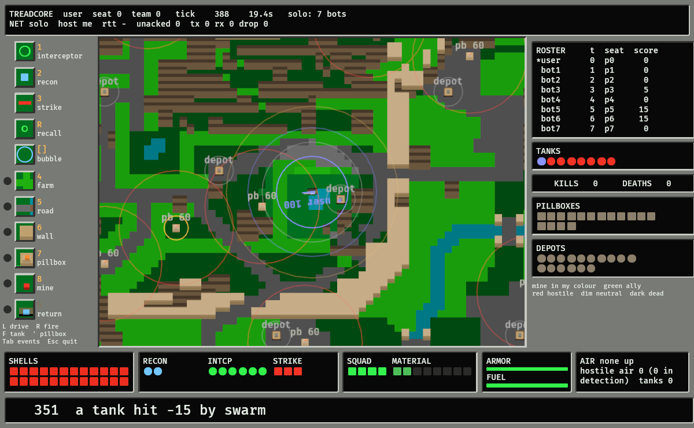
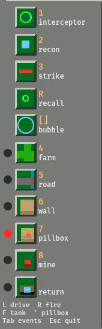

Treadcore: An Overhead Tank Game for the Drone Battlefield, Its Rules, and a Review of Its Balance and Its Network
treadcore.org, United States
Abstract—Treadcore is a sixteen-player overhead tank game whose premise is the tank as it stands in 2026: an indirect-fire platform that lives or dies by the drones flown off its own hull. The gun lobs shells at map coordinates and lands them well only where a recon drone is watching; interceptors hold a ring round the tank and ram the strike drones that come for it; a squad of four takes and holds the ground with roads, walls, mines and pillboxes, in the manner of the 1987 game the design descends from. The world is a deterministic simulation stepped twenty times a second, hashed and replayable, that every client and every bot sees only through a filtered observation. There is no server: the players' processes measure the links between them and elect a host, route round links that fail, and keep a seat for a player who drops. This paper states the rules and their numbers, then reviews two things with measurements. The balance review runs the rule bots through eight traced matches and finds that the gun is the weapon (shells account for 72 percent of kills, strikes 21), that the interceptor ring stops 63 to 82 percent of what it sees and lets 5 to 13 percent of strikes through, that pillboxes hold ground rather than kill, and that four tanks on a sixteen-start island barely meet. The network review reports the election, relay and rejoin tests and a client's measured round trip and prediction record. A last section sets the game against the clean-room specification of its ancestor and against what is real.
Index Terms—Deterministic simulation, drone warfare, game balance, host election, indirect fire, lockstep, overhead tank game, peer-to-peer, prediction, swarm.
I. The Game
The island is 128 by 128 tiles, a tile 25 m, so a map 3.2 km across. Up to sixteen players each drive one tank from a start near the edge; a rule bot takes every seat a person does not. Seventeen depots resupply and repair, one near each start and one in the centre. Twenty neutral pillboxes shoot anyone within eight tiles. Every forty-five seconds four neutral strike drones come in off a random edge at the nearest tank, so a solo game is a game. The match ends when one tank, or one team, is left standing, or at the time limit with the highest score: a kill is 100, a capture 25, an intercept 5.
The world is headless and deterministic (treadcore-sim). The same seed and the same orders give the same world, which is what lets one process be authoritative and the rest draw its view, what lets a match be recorded and replayed to the same hashes, and what lets a bot be tested. A tick applies that tick's orders, moves tanks, drones and shells, resolves intercepts, strikes, impacts, captures and resupply, spawns the swarm if due, and checks for a result. Fog of war is cut in the world before anything leaves it: a player sees seven tiles from the tank, twelve from a recon drone, four from any other drone, and a tank wholly inside a two-by-two block of forest is unseen beyond three tiles by any eye or pillbox.
The window. The screen is laid out as the ancestor's was: orders down the left, the map in the middle with the player's tank at its centre, the state of everyone and everything down the right as lamps coloured by owner, the tank's stock along the bottom, and one line of news. Everything drawn is a rectangle; the things on the map are stacks of small cubes whose damage shows as cubes chipped off. Fig. 1 is the frame; the player's guide walks it.

II. The Tank and the Gun
A tank has 100 armor, 24 shells, 600 fuel and a bay of drones; it drives four tiles a second on open ground, sees seven, and what it starts with is the game type's: open (everything full), tournament (half the shells, no material) or strict (neither, so the first act is a drive to a depot). A Move names a destination and the world routes to it with the map's own A*, roads preferred and water avoided; neither a client nor a bot holds the map in its observation, so the routing has to be the world's. The first traced match had a bot parked at a river bank for its whole life because the straight line to the centre crossed the water beside the bridge.
The gun is the weapon, and its first mode is indirect: any point between 12 and 60 tiles, flight time the range over ten tiles a second, so six seconds at full range. Scatter is a uniform disc of radius 0.6 tiles if a friendly recon has the aim point in view at launch and 4 tiles if not. The impact does 70 at the centre falling to 17 at the edge of a 2.5-tile splash, craters the ground, and kills every drone inside two tiles, so a shell does plenty to a bubble and a bubble nothing to a shell. Direct fire is kept for anything inside ten tiles with a clear line: 45 damage, a third of a second. Table I has the numbers.
| Quantity | Value | Note |
|---|---|---|
| Armor, shells, fuel | 100, 24, 600 | fuel at one a tile; a depot gives a shell, 4 armor and 40 fuel every half second |
| Speed, tiles/s | 4 | 360 km/h at the map's scale; kept after a trace at 2.5 changed nothing |
| Vision, tiles | 7 | halved into single trees; nothing beyond 3 into a 2 by 2 block |
| Indirect range, tiles | 12 to 60 | 300 m to 1.5 km |
| Shell speed, tiles/s | 10 | six seconds at full range |
| Scatter, spotted / blind, tiles | 0.6 / 4 | uniform disc; spotted means a friendly recon sees the point at launch |
| Splash damage and radius | 70 in 2.5 | 17 at the edge; drones inside 2 tiles die |
| Reload, s | 4 | |
| Direct range, damage, flight | 10, 45, 0.3 s | needs a clear line, no forest between |
III. The Drone Crew and the Bubble
The bay holds two recon, six interceptors and three strikes; at most ten of a player's drones fly at once. Every tethered drone has a link quality from one at the tank to zero at its link range, and below 0.12 it has lost contact and turns for home on its own, except a strike already in its dive, which is what makes strikes dangerous. A drone that gets home goes back in the bay; one with a low battery goes home first. The bay refills at a depot, interceptors first.
Interceptors orbit the tank on the bubble, a ring the player sets between 2 and 12 tiles (default 5); detection reaches four tiles past it. When a hostile strike enters detection the nearest free interceptor is assigned, closes and rams: a one-shot kinetic kill with probability 0.5 + 0.4 times link quality, because the tank's radar is what gives it a vector and on its own camera it gets it right half the time. A wide bubble meets the threat early but spreads the ring thin and runs the interceptors near the end of their link. Interceptors never engage interceptors; section VI says what happened when they did. An enemy recon inside the bubble is intercepted too, since it is spotting for someone's gun. Recon drones orbit a chosen point and spot; strikes fly to a target tank and dive for 35.
| Recon | Interceptor | Strike | |
|---|---|---|---|
| In the bay | 2 | 6 | 3 |
| Speed, tiles/s | 5 | 9 | 6.5 |
| Battery, s | 150 | 90 | 45 |
| Link range, tiles | 40 | 18 | 18 |
| Vision, tiles | 12 | 4 | 4 |
| Does | orbits a point, spots for the gun | holds the bubble, rams a strike: kill 0.5 + 0.4 × link | flies to a tank and dives for 35 |
IV. The Builder and the Ground
A squad of four, the Pillboys, rides with the tank and is the ancestor's builder: an order the tank gives, not a unit the player drives. The order is one of five modes, in the ancestor's order (farm, road, wall, pillbox, mine), armed by a key or a click on its tile and given by a click on a square; the squad walks there at 1.5 tiles a second, does the work, and walks back. Farming a forest tile takes four seconds and yields four material, of eight the squad can carry; a road or bridge, a wall, or a mine costs one and takes three seconds; a pillbox costs two and takes fifteen. The squad outside the tank can be killed by a shell or a mine blast and comes back a man at a time at a depot; a dead squad's order is forgotten.
A pillbox is an automatic gun with 60 health, eight shells regrown one every ten seconds, range eight tiles against tanks and four against drones, 15 damage every two seconds. It never leaves the map. Shot dead, it is captured by a squad standing on it for ten seconds, and comes back at half health for its new owner; the builder repairs any pillbox, whoever owns it, for one material in six seconds, and repair never changes the owner. A wall stands three levels high, blocks tanks, shots and a pillbox's line of fire, and a shell's splash knocks it to rubble. A mine is hidden until a hostile comes within a tile and a half, does 50 to a tank on it and 20 around, and sets off its orthogonal neighbours but not its diagonal ones. The traces of section VI say what each of these does to a match.

V. Alliances and the Three-Way Rule
Players start each on a side of their own unless the scenario deals teams. Every change of sides in play is a proposal from one player to another, to join them, recruit them, swap teams or merge whole teams, and the one asked, or anyone on their team, accepts or declines within thirty seconds. A team shares its picture, so a shell at what only an ally's recon sees is spotted; its depots and its pillboxes' shells; the knowledge of its mines; and chat. It is spared friendly fire from allies, though a player's own shells still hurt them, because that is a mistake and not an ally.
The world refuses a proposal, with the reason, when it is made and again when it is accepted, if the outcome would leave fewer than three sides with a living tank or give one side more than half the living tanks. Three is the smallest number of sides in which an alliance is a choice rather than the end of the match, and half is where a side stops needing anyone. Every resolution is announced to everyone, so a betrayal is public the moment it happens. The defender trace of Table IV shows the rule in use: fifteen proposals, three accepted.
VI. Balance Review
The review is the headless server running rule bots in every seat for three game minutes, written to a trace, with a report after the scoreboard: shells by kind and whether spotted, drones launched, intercepts and the share of strikes that got through, kills by cause and the time of the first, and what was captured and built. The same seed and orders always give the same match, and a replay must reproduce every recorded hash. Two sets are reported: the eight-seed study of 13 October 2026 that fixed the interceptor rule (Table III), and the eight matches run on the release candidate for this paper (Table IV).
The interceptor rule. The first traces had interceptors engage anything that flew. Two bubbles that overlapped stripped each other in seconds, the bots refilled them from the bay until it was empty, and the strikes came through the gap: 32 interceptors shot down a match, 24 percent of strikes through, and the kills nearly even between shell and strike. With interceptors engaging strikes only, and a recon inside the bubble, the gun became the weapon: 8.8 kills by shell to 2.9 by strike, six interceptors lost, 15 percent through. Slowing the tank to 2.5 tiles a second moved the figures within the noise and was not kept. The bubble is a shield, not a sword, and the analogue of a fighter screen was rejected for the game's sake.
| Variant | Kills | by shell | by strike | Interceptors shot down | Alive at end | Strikes through |
|---|---|---|---|---|---|---|
| Baseline: interceptors engage everything | 13.2 | 7.0 | 5.9 | 32 | 2.8 | 24% |
| Strikes only | 11.9 | 8.8 | 2.9 | 6 | 4.1 | 15% |
| Strikes only, tank at 2.5 tiles/s | 12.0 | 9.8 | 2.2 | 3 | 4.0 | 10% |
| Final: strikes only, brain fixes | 11.8 | 9.2 | 2.5 | 6 | 4.2 | 10% |
The candidate. Table IV is the release candidate, eight matches on the generated sixteen-start map. Across the three plain seeds, 33 kills fell in 540 game seconds, 28 of them to shells and 5 to strikes; the first kill came between ten and fifteen seconds, which is the first minute's problem the playability review ranks first; between three and six of sixteen tanks were alive at the end. The ring stopped 69 to 78 percent of what it engaged and let 5 to 13 percent of strikes through, two thirds of them the swarm's. Of 67 to 70 indirect shells a match, two thirds to four fifths were spotted. Every match captured fourteen to sixteen of the twenty pillboxes and six or seven depots, and pillboxes fired at most once: with the router keeping tanks out of hostile rings, a pillbox's job is to make a depot untakeable by a tank, not to kill, and sixteen of seventeen depots were held at the end of every match. Strict tournament, where nobody starts with a shell, shot 28 shells, every one spotted: the bots that drove to a depot first shot last and best.
Defenders, teams, four players. With twelve Defender brains dug in at their depots against four attackers, the match turns into the ground game: six walls and six pillboxes built, 113 mines left, three of eight kills by mine, and the only proposals of the set. Four teams of four share recon, and the one match in which pillboxes fired (six times) is that one, where allies drove through each other's rings. Four players on the sixteen-start island do not meet: no indirect shell was fired in three minutes, the one kill came at 151 seconds, and the time limit decides. A fifteen-minute limit on the default seed ended by last tank standing at 499 seconds with fifteen kills, eleven by shell, after 24 depot captures.
| Match | Kills (shell / strike / other) | First kill, s | Alive at end | Indirect shells (spotted) | Intercepts | Strikes through | Pillboxes captured | Depots captured | Pillbox shots |
|---|---|---|---|---|---|---|---|---|---|
| 16 bots, seed 7EADC0DE | 10 (10 / 0 / 0) | 9.9 | 6 | 67 (44) | 65 of 83, 78% | 3 of 64, 5% | 15 | 7 | 0 |
| 16 bots, seed 1234 | 10 (8 / 2 / 0) | 13.6 | 6 | 70 (55) | 76 of 99, 77% | 4 of 81, 5% | 16 | 7 | 0 |
| 16 bots, seed BEEF | 13 (10 / 3 / 0) | 14.4 | 3 | 56 (49) | 103 of 149, 69% | 12 of 92, 13% | 14 | 6 | 1 |
| 12 Defenders, 4 attackers | 8 (3 / 2 / 3 mine) | 11.4 | 8 | 26 (25) | 83 of 131, 63% | 3 of 32, 9% | 14, and 6 built | 4 | 0 |
| Four teams of four | 9 (6 / 3 / 0) | 13.7 | 7 | 68 (43) | 80 of 120, 67% | 7 of 74, 9% | 16 | 6 | 6 |
| Strict tournament | 11 (9 / 1 / 1 swarm) | 10.1 | 5 | 28 (28) | 58 of 71, 82% | 6 of 62, 10% | 15 | 11 | 0 |
| Four players | 1 (1 / 0 / 0) | 150.9 | 3 | 0 (0) | 18 of 26, 69% | 1 of 18, 6% | 13 | 10 | 0 |
| 16 bots, 900 s limit, ended at 499 s | 15 (11 / 3 / 1 swarm) | 9.9 | 1 | 74 (50) | 126 of 173, 73% | 15 of 113, 13% | 17 | 24 | 1 |
What the review says. The gun is the weapon by a factor of three or four, and the recon is what makes it one: the spotted share of shells tracks the kill rate. The ring does what a shield should and no more. The two things the numbers call for are in the window and the brain, not the rules: a bot opening that does not fire at a tank which has not moved for its first minute, because a first kill at ten seconds is a newcomer dead reading the help; and a bot that stands in forest, since the concealment rule is in and nobody uses it. The four-player result is the map's, not the rules': sixteen starts spaced for sixteen keep four apart, and a four-start map is the answer.
VII. The Network Without a Server
Each process beacons the LAN, pings every peer it finds, and publishes a row of the latency matrix; every peer runs the same election on the same matrix, so they agree without a vote: the host is the peer whose worst link to anyone is best, and anyone the host cannot reach directly sends through the neighbour who can. The host is authoritative; a client predicts its own tank and yields to every snapshot, and a prediction mismatch is counted and corrected, never argued. Across the Internet a small introducer registers hosts and tells peers each other's addresses, and the peers punch through; it hosts nothing. A seat belongs to a peer identity that survives a restart, so a player whose game drops starts it again and is back in the same seat with everything that was theirs, for as long as the match lasts.
Table V is the record: the lobby test runs four headless seats on one machine through the election, with lag, through the introducer only, and with a seat killed and brought back; and the first playtest build measured a window as a client. The round trip the HUD first showed was not a round trip but a heartbeat's age, and once the host echoed the client's own stamp it read 50 to 150 ms with 30 ms of lag each way. In 784 prediction checks under lag there were no mismatches, which is why the smoothing of a correction is deferred until one is seen.
| Proof | Result |
|---|---|
| Four headless seats on one machine elect a host | pass; 1 435 prediction checks, 0 mismatches |
| The same through the introducer only, no LAN broadcast | pass; 12 introductions; 1 551 checks, 0 mismatches |
| A seat killed and brought back | back in its seat at tick 371, no election; 1 259 checks, 0 |
| The same with 200 ms of lag | back in seat 0 at tick 376; 1 194 checks, 0 |
| Two silent peers brought together by the introducer | both decide one host; each measured the other |
| Lobby to playing, three peers, introducer only | under 3 s |
| Round trip on the HUD, 30 ms of lag each way | 50 to 150 ms (200 to 450 before the echo fix) |
| A window killed outright and restarted | about 6 s to playing again, in its seat, the window's start most of it |
| Tick rate, one window, eight seats, software rasteriser | 20.0 Hz held |
VIII. Brains
A Brain is anything that takes an observation and returns commands. The observation is the player's view as the host filters it, so a bot cannot see or do anything a keyboard cannot; the same rule keeps the destruction in the window, where a cube is a cube, out of the simulation, where it is not a thing. The rule bot fills empty seats: it moves and shoots at what its recon sees, keeps its ring up, sends the squad for pillboxes and forest, and makes and answers proposals under the three-way rule. The Defender digs in at a depot with a pillbox at the mouth of its road. An external brain is a program that reads one JSON observation per line and writes one JSON array of commands, in any language, and the debug trace puts it in a seat against fifteen rule bots.
IX. Against the Prior Art
The design descends from a 1987 home-computer tank game and its 1989 desktop port: a shared, mutable overhead world, up to sixteen players on separate machines, external brains driving tanks through the player's own interface, and a network that was a ring of peers. A clean-room functional specification of that game, written from its manual in new words, is kept with the source, and a preface says what treadcore adopts: the builder as the squad, the pillboxes and their capture, the mines, the three game types, the alliance rules, forest concealment, and the screen. Not adopted: boats and deep sea, the base's armour as its gate (a trace argued for a time gate instead), the dedicated server, and the asset files, because nothing here is an image.
The screen was then held against the ancestor's pixel by pixel. Its builder column has five buttons at a 50-pixel pitch, each a three-by-three-square picture of the real sprites, with one red lamp for the active mode; treadcore's had fourteen abstract tiles and thirteen lit lamps, which said nothing, and the mode-then-click of the specification's BLD-01 was not followed at all. It is now, in the ancestor's order, and the lamp is the one lamp lit. A repair that refused any pillbox but the player's own (BLD-05) was found the same way and corrected in the simulation. The remaining divergences are chosen: the gun takes a point a recon sees rather than a range, and the mouse drives.
X. What Is Real and What Is Not
The premise is reported, not invented. Analyses of the Russian tank force in 2026 describe tanks firing indirect at up to 10 km from prepared positions and moving, with FPV drones accounting for over two thirds of losses since 2024 [1]; China is reported developing indirect fire for its next tank [2]; and the artillery trade argues that drones fill a shell shortage inside a kill chain of reconnaissance and fire control rather than replacing the gun [3], [4]. Armoured vehicles with their own interceptor drones are prototypes and products: a wheeled carrier with five interceptors and a drone operator in the crew [5], a tank concept with recon drones ahead and tube-launched interceptors [6], a vehicle-mounted radar and interceptor launcher in service since 2024 [7]. A closed-down crew seeing through the hull on a helmet display, with the drone's video one button away, is a fielded system [8]; swarms that pool what they see so the operator confirms rather than flies, and interceptors made as a consumable, are the reported direction [9], [10].
The numbers are the game's. A tile is 25 m and the gun's 12 to 60 tiles are 300 m to 1.5 km, scaled to a 3.2 km island rather than to any gun; four tiles a second is 360 km/h. A one-shot kinetic interceptor whose kill chance depends on the telemetry link is a rule that stands for the radar's vector, not a measurement. Forest that hides a tank from a drone's camera is the oldest counter to the air and the one reason to leave trees standing; that a tank in a two-by-two block is invisible beyond three tiles is the ancestor's rule, kept. The squad of four that builds a pillbox in fifteen seconds is a game. The one thing taken from the ancestor without change is the shape of the screen, because thirty-nine years of players found it readable.
XI. Conclusion
A deterministic world, a gun that needs a spotter, a ring that is a shield, a squad that takes the ground, and a network that elects its own host make a sixteen-player game that runs on a CPU rasteriser at twenty ticks a second and can be replayed to the hash. The review finds the balance it was designed for: shells kill, strikes threaten, the ring holds, pillboxes hold ground, and alliances are a choice. What it finds wanting is in the first minute and the map, and both are named in the playability review with their cost. The release candidate is offered for playtesting, and the procedure that built it refuses any release whose pictures are not the window it ships.
References
- Adapt Institute, “The future of the Russian tank forces,” Mar. 2026. [Online]. Available: https://www.adaptinstitute.org/future-of-the-russian-tank-forces/09/03/2026/
- UNITED24 Media, “China developing indirect-fire capabilities for tanks following war in Ukraine trends,” 2026. [Online]. Available: https://united24media.com/latest-news/china-developing-indirect-fire-capabilities-for-tanks-following-war-in-ukraine-trends-12491
- Small Wars Journal, “Beyond the hype: Why drones cannot replace artillery,” May 2025. [Online]. Available: https://smallwarsjournal.com/2025/05/05/beyond-the-hype-why-drones-cannot-replace-artillery/
- New Geopolitics, “The artillery: New warfare, new role,” Jul. 2025. [Online]. Available: https://www.newgeopolitics.org/2025/07/23/the-artillery-new-warfare-new-role/
- Militarnyi, “Interceptor drones on a Boxer armored vehicle,” 2026. [Online]. Available: https://militarnyi.com/en/news/interceptor-drones-boxer-armored-vehicle/
- Interesting Engineering, “Armored tank pairs unmanned turret with drone,” 2026. [Online]. Available: https://interestingengineering.com/innovation/armored-tank-pairs-unmanned-turret-with-drone
- Wikipedia, “Merops (weapon).” [Online]. Available: https://en.wikipedia.org/wiki/Merops_(weapon)
- Elbit Systems, “IronVision helmet mounted display.” [Online]. Available: https://www.elbitsystems.com/air-space/aircraft-systems/helmet-mounted-display/ironvision
- Breaking Defense, “Bringing real autonomy to battlefield drone swarms,” Oct. 2026. [Online]. Available: https://breakingdefense.com/2026/10/bringing-real-autonomy-to-battlefield-drone-swarms/
- Defense News, “Infrastructure is the weapon: Inside the race to build portable interceptor factories,” Apr. 2026. [Online]. Available: https://www.defensenews.com/news/your-military/2026/04/01/infrastructure-is-the-weapon-inside-the-race-to-build-portable-interceptor-factories/
- P. Richeson, “The prior art, version 1.14: Clean-room functional specification,” treadcore, documentation/SPEC-PRIOR-ART-1.14.md, Oct. 2026. [Online]. Available: https://github.com/treadcore/treadcore/blob/main/documentation/SPEC-PRIOR-ART-1.14.md
- P. Richeson, “Design: The rules, the numbers, and why,” treadcore, documentation/DESIGN.md, Oct. 2026. [Online]. Available: https://github.com/treadcore/treadcore/blob/main/documentation/DESIGN.md
- P. Richeson, “The creation journal,” treadcore, journal/0001 to 0018, Oct. 2026. [Online]. Available: https://github.com/treadcore/treadcore/tree/main/journal
- P. Richeson, “Making treadcore playable: A review,” treadcore, documentation/PLAYABILITY.md, Oct. 2026. [Online]. Available: https://github.com/treadcore/treadcore/blob/main/documentation/PLAYABILITY.md